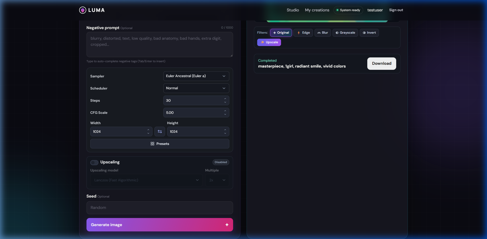
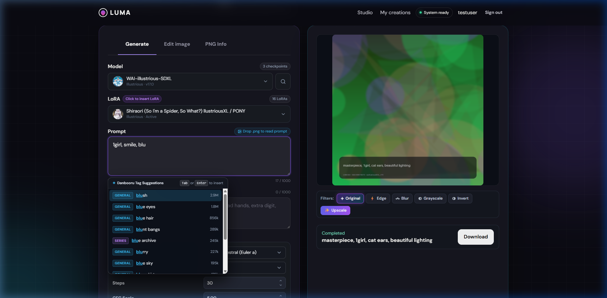
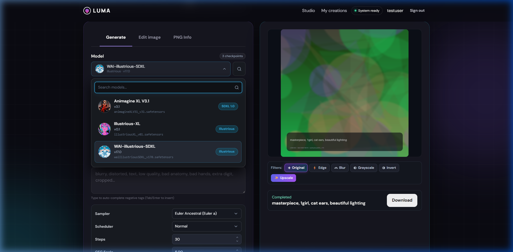
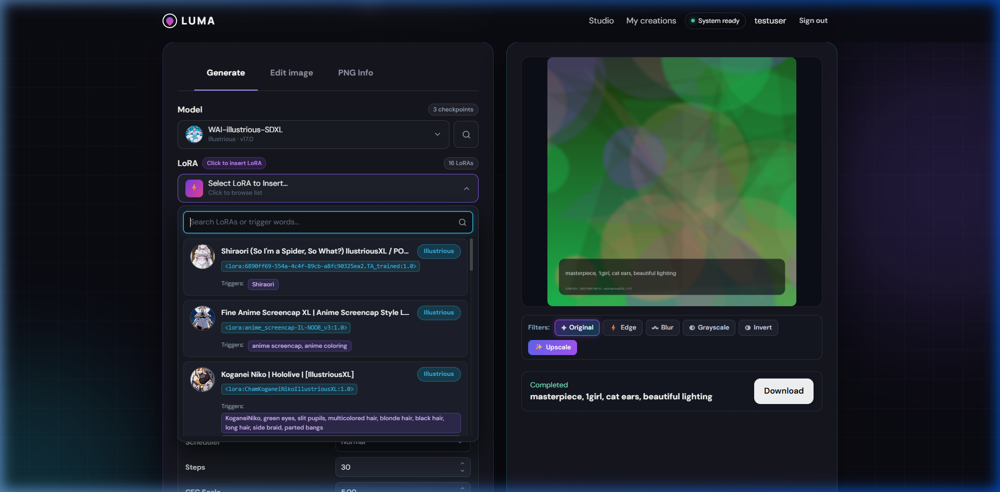

Project LUMA คืออะไร? (เปรียบเทียบเป็น "ภัตตาคาร AI ไฮเทค")
ถ้าคุณไม่เคยเขียนโปรแกรมมาก่อน ไม่รู้ว่า Backend คืออะไร หรือ Nginx มีไว้ทำไม ให้ลองจินตนาการว่า Project LUMA คือ "ร้านอาหารญี่ปุ่นโอมากาเสะสุดหรู" ที่แบ่งแผนกการทำงานออกเป็น 4 ส่วนอย่างชัดเจน เพื่อให้ลูกค้านั่งกินได้อย่างสบายใจโดยที่ห้องครัวไม่ระเบิด:
หน้าร้าน และ เล่มเมนูอาหาร
คือหน้าจอสวย ๆ ที่ผู้ใช้มองเห็นบน Google Chrome เหมือนลูกค้าเดินเข้ามานั่งที่โต๊ะ มีช่องให้เขียนสั่งอาหาร (Prompt), มีเมนูคอยแนะนำชื่อเมนูยอดฮิต (Danbooru Tag แนะนำคำ), มีแถบหลอดโหลดบอกว่าอาหารทำถึงไหนแล้ว และมีปุ่มให้กดรับภาพอาหารกลับบ้าน (Download)
frontend/index.html, frontend/assets/app.jsรปภ. และ พนักงานต้อนรับหน้าประตู
ยืนอยู่หน้าประตูร้าน คอยดูว่าคนที่เดินเข้ามาต้องการอะไร? ถ้าลูกค้าแค่อยากดูเล่มเมนู ก็แจกไฟล์หน้าเว็บให้ไปดู แต่ถ้าลูกค้าจะสั่งอาหาร (คำขอ /api/) รปภ. จะพาเดินไปส่งให้ผู้จัดการร้าน หรือถ้าอาหารทำเสร็จแล้ว (คำขอ /media/) รปภ. ก็จะวิ่งไปเบิกรูปอาหารมาส่งให้ถึงมือ
nginx/nginx.conf, nginx/luma.confผู้จัดการร้าน และ แคชเชียร์จดบัญชี
คอยตรวจสอบบัตรสมาชิก (ล็อกอินด้วยรหัสผ่านและ JWT Token), เช็กว่าใบสั่งอาหารเขียนถูกต้องไหม, จดเลขออเดอร์ลงสมุดบัญชีร้าน (SQLite Database) ว่านี่คืองานหมายเลขอะไร แล้วจ้างเด็กส่งสาร (Worker Thread) วิ่งถือใบสั่งงานข้ามสายแลนไปส่งให้ห้องครัวใหญ่
backend/luma_backend/jobs.py, worker.pyหัวหน้าเชฟ และ เตาอบการ์ดจอ GPU
อยู่ในห้องครัวใหญ่ (เครื่องที่มีการ์ดจอแรง ๆ) หัวหน้าเชฟจะคอยคุมคิว (Queue Lock) ไม่ให้คนแย่งกันใช้เตาอบจนไฟดับ แล้วส่งคำสั่งเข้าเตาอบการ์ดจอ (WebUI Forge / SDXL) ให้สุ่มเม็ดทรายสัญญาณรบกวน 28 รอบจนกลายเป็นภาพวาดอนิเมะ พอภาพออกมา เชฟจะเขียนสูตรลับลงบนกล่อง (PNG Info) แล้วส่งภาพกลับไปให้ผู้จัดการ
ai-engine/app.py, forge_client.pyโครงสร้างการเชื่อมต่อ 3 เครื่องผ่านวง Hamachi (3-PC Setup)
ในการใช้งานจริง โปรแกรมนี้ไม่ได้รันรวมกันในคอมเครื่องเดียว แต่ถูกแยกกระจายออกไป 3 เครื่อง โดยคุยกันผ่านสายแลนเสมือน (LogMeIn Hamachi) เพื่อแบ่งเบาภาระของแต่ละเครื่อง:
🖥️ PC 1: AiEngine & Forge
25.23.21.202หน้าที่: มีการ์ดจอ NVIDIA RTX ประมวลผลโมเดล SDXL และคุมคิวเจนภาพ
🗄️ PC 3: Backend & Database
172.20.56.162luma.db) + โฟลเดอร์รูปภาพหน้าที่: เก็บข้อมูลผู้ใช้ คุมคิวงาน สร้างลิงก์ความปลอดภัย HMAC และเซฟภาพลงฮาร์ดดิสก์
🌐 PC 2: Frontend & Nginx
25.10.76.51หน้าที่: เปิดให้ทุกคนเข้าเว็บผ่าน http://25.10.76.51:8080/ และส่งข้อมูลต่อไปยัง Backend
Flowchart: ตั้งแต่กดปุ่ม "Generate" จนได้รูปดาวน์โหลดลงเครื่อง
นี่คือแผนผังการเดินทางของข้อมูลแบบ 12 ขั้นตอน อธิบายให้เห็นว่าเมื่อคุณพิมพ์คำว่า "1girl, solo, anime" แล้วกดปุ่ม มันเดินทางข้ามเน็ตไปไหนบ้าง:
ผู้ใช้กรอกข้อมูลที่หน้าเว็บ (เครื่อง PC 2)
ผู้ใช้เลือกโมเดล (Checkpoint), เลือก LoRA, พิมพ์คำสั่ง (Prompt) ซึ่งจะมีระบบแนะนำคำศัพท์แท็กช่วยพิมพ์ จากนั้นกดปุ่ม "Generate"
frontend/assets/app.js ➔ ฟังก์ชัน submitGeneration() ภาพที่ 1: หน้าจอ Studio กรอกค่าพารามิเตอร์
ภาพที่ 1: หน้าจอ Studio กรอกค่าพารามิเตอร์
Frontend ยิงคำขอไปหา Nginx ประตูหน้าบ้าน
เบราว์เซอร์ส่งข้อมูลแบบ JSON ผ่านคำสั่ง fetch("/api/v1/jobs/generate") พร้อมแนบตั๋วผ่านทาง Authorization: Bearer <Token> ไปหา Nginx
frontend/assets/app.js ➔ ฟังก์ชัน api()Nginx ส่งต่อให้ Backend ข้ามเครื่อง (PC 2 ➔ PC 3)
Nginx เห็นว่าเป็นคำขอขึ้นต้นด้วย /api/ จึงทำการส่งต่อ (Proxy Pass) ข้ามสายแลน (Local LAN) ไปยังเครื่อง Backend ที่ไอพี 172.20.56.162:5000
nginx/luma.conf ➔ บรรทัด location ^~ /api/ { proxy_pass http://luma_backend; }Backend รับงาน, ตรวจสิทธิ์ และบันทึกลงฐานข้อมูล
Flask ตรวจสอบรหัสตั๋ว JWT ว่าผู้ใช้คนนี้มีสิทธิ์ไหม, สุ่มเลขไอดีของงาน (UUID เช่น 4c59629f-...), จดลงฐานข้อมูล SQLite สถานะ "queued" (เข้าคิวรอ), แล้วตอบกลับหน้าเว็บทันทีด้วยรหัส HTTP 202 Accepted
backend/luma_backend/jobs.py ➔ ฟังก์ชัน generate()หน้าเว็บเริ่มระบบถามวน (Polling) เพื่อดูหลอดโหลด
หน้าเว็บพอรู้ว่าคำสั่งถูกรับแล้ว จะเปลี่ยนปุ่มเป็นรูปหมุนติ้ว ๆ แล้วส่งคำถามไปเช็กทุก ๆ 0.5 วินาที ว่า "ภาพวาดเสร็จหรือยัง? ขอดูรูปตัวอย่างหน่อย"
frontend/assets/app.js ➔ ฟังก์ชัน pollJob() และ pollProgress()
ภาพที่ 2: หน้าจอหลอดโหลด % และปุ่ม Cancelคนส่งของ (Worker) ส่งงานไปเครื่องการ์ดจอ (PC 3 ➔ PC 1)
พนักงานเบื้องหลัง worker.py วิ่งส่งคำขอ HTTP POST ข้ามเน็ต Hamachi ไปยังเครื่อง AI Engine ไอพี 25.23.21.202:8000 พร้อมรหัสลับพิเศษ X-LUMA-Service-Token
backend/luma_backend/worker.py ➔ ฟังก์ชัน process_job()AiEngine ล็อกคิว GPU ป้องกันการ์ดจอระเบิด (Queue Lock)
FastAPI รับงานมาแล้ว จะตรวจสอบตัวล็อก queue_manager.acquire() เพื่อให้แน่ใจว่าการ์ดจอว่างอยู่ และไม่มีงานอื่นแย่งใช้ VRAM พร้อมกัน
ai-engine/queue_manager.py ➔ เมธอด acquire()WebUI Forge รันการสุ่มภาพด้วย AI บนการ์ดจอ (CUDA)
WebUI Forge (เสถียรด้วย Stability Matrix) รับค่าไปสั่งการ์ดจอ NVIDIA RTX คำนวณคณิตศาสตร์ตัวเลขล้าน ๆ ตัว สุ่มสัญญาณรบกวนตาม Seed วนลูป 28 รอบจนกลายเป็นภาพสวยงาม
ai-engine/forge_client.py ➔ ฟังก์ชัน generate_forge_image()ถอดรหัสภาพ & ฝังพารามิเตอร์ลับลงในไฟล์ PNG (PNG Info)
Forge ส่งภาพออกมาเป็นรหัส Base64 ทาง AiEngine จะแปลงกลับเป็นไฟล์ภาพ และใช้คำสั่ง PngInfo ยัดข้อความพารามิเตอร์ (Prompt, Seed, Sampler) ฝังลงในเนื้อไฟล์ภาพ ก่อนส่งไฟล์ Binary PNG กลับไปให้ Backend
ai-engine/app.py ➔ บรรทัดที่ 557 ฝัง pnginfo.add_text("parameters", ...)Backend บันทึกรูปลง Disk & ทำกุญแจลับ HMAC
เครื่อง Backend รับข้อมูลภาพไบนารีมา เขียนเป็นไฟล์รูปภาพลงในโฟลเดอร์เก็บรูป (เช่น MEDIA_ROOT/4c59629f.png), อัปเดตฐานข้อมูลเป็น "completed" (100%), และสร้างลิงก์รูปภาพที่มีกุญแจลับเข้ารหัสป้องกันคนอื่นแอบดู
backend/luma_backend/worker.py และ jobs.py ➔ ฟังก์ชัน result_url()หน้าเว็บพบว่าเสร็จแล้ว โหลดรูปภาพมาแสดงผล
Frontend ที่คอยส่งคำถามไปเช็ก ได้รับคำตอบว่า "เสร็จแล้ว!" พร้อมได้ลิงก์รูป /media/...png?token=... เบราว์เซอร์จึงดึงภาพผ่าน Nginx มาแสดงผลบนหน้าจอให้ผู้ใช้ชมทันที
frontend/assets/app.js ➔ ฟังก์ชัน showResult() ภาพที่ 3: ภาพที่เจนเสร็จแล้วแสดงขึ้นบนหน้าจอ
ภาพที่ 3: ภาพที่เจนเสร็จแล้วแสดงขึ้นบนหน้าจอ
ผู้ใช้กดปุ่ม "Download" ดึงภาพเก็บลงโฟลเดอร์เครื่อง
เมื่อผู้ใช้กดปุ่ม Download สคริปต์พิเศษ downloadActiveImage() จะทำการดึงข้อมูลภาพมาแปลงเป็นก้อนเนื้อไบนารี Blob ในเบราว์เซอร์ เพื่อทะลุกฎความปลอดภัยของ Chrome แล้วเซฟเป็นชื่อ luma-xxxx.png ลงในโฟลเดอร์ Downloads ของคอมพิวเตอร์อย่างปลอดภัย 100%
frontend/assets/app.js ➔ ฟังก์ชัน downloadActiveImage()เจาะลึกโค้ดจริงในระบบ: โค้ดไหนคุยกับโค้ดไหน?
สำหรับผู้ที่ต้องการเข้าใจว่า "ตัวแปรนี้มาจากไหน? บรรทัดนี้ส่งต่อไปที่ไฟล์ไหน?" นี่คือการแกะรอยโค้ดจริงแบบจับคู่ชนกัน:
หน้าเว็บ Frontend ส่งข้อมูลไปให้ Backend (ปุ่ม Generate)
ต้นทาง: ไฟล์ frontend/assets/app.js (บรรทัดที่ 710 - 745)
// ดึงข้อความที่ผู้ใช้พิมพ์จากหน้าจอ
const promptText = $("#prompt").value;
const widthVal = $("#width").value; // เช่น 832
const heightVal = $("#height").value; // เช่น 1216
// รวมข้อมูลเป็นก้อน JSON แล้วยิงไปหา Backend ผ่าน Nginx:
const response = await api("/jobs/generate", {
method: "POST",
body: JSON.stringify({
prompt: promptText,
width: parseInt(widthVal),
height: parseInt(heightVal),
steps: 28,
model: state.activeModel
})
});
// ได้รับคำตอบกลับมาเป็น Job ID:
console.log("ได้หมายเลขงานแล้ว:", response.job.id);
pollJob(response.job.id); // เริ่มเปิดลูปคอยถามสถานะ⬇️ ข้อมูลวิ่งข้ามสายแลนผ่าน Nginx ไปเข้าไฟล์นี้ ⬇️
ปลายทางรับเข้า: ไฟล์ backend/luma_backend/jobs.py (บรรทัดที่ 65 - 88)
@jobs_blueprint.post("/generate")
@jwt_required() # ตรวจสอบว่ามีตั๋ว Token หรือยัง
def generate():
# 1. แกะข้อมูล JSON ที่ส่งมาจากหน้าเว็บ:
data = request.get_json()
prompt = parse_prompt(data.get("prompt"))
width = int(data.get("width", 512))
height = int(data.get("height", 512))
# 2. บันทึกงานลงตารางฐานข้อมูล SQLite:
job = Job(
id=str(uuid.uuid4()), # สุ่มรหัสงาน เช่น 4c59629f-c7c6...
user_id=current_user_id(), # รหัสผู้ใช้ที่ล็อกอิน
prompt=prompt,
width=width,
height=height,
status="queued" # ให้สถานะเริ่มต้นเป็น 'เข้าคิวรอ'
)
db.session.add(job)
db.session.commit()
# 3. สั่งให้คนส่งของ (Worker) แบกงานนี้ไปทำต่อที่เบื้องหลัง:
queue_job(current_app._get_current_object(), job.id)
# 4. รีบตอบกลับหน้าเว็บทันที ไม่ต้องรอภาพเสร็จ:
return jsonify({"job": serialized(job)}), 202พนักงาน Backend (Worker) แบกงานข้ามเครื่องไปให้ AiEngine
ต้นทาง: ไฟล์ backend/luma_backend/worker.py (บรรทัดที่ 35 - 70)
# ดึงงานออกมาจากฐานข้อมูล
job = db.session.get(Job, job_id)
job.status = "processing" # เปลี่ยนสถานะเป็น 'กำลังทำ'
# เตรียมหัวจดหมายลับ และไอพีเครื่องที่ 1 ที่มี AI:
headers = {"X-LUMA-Service-Token": "luma-shared-secret-token"}
base_url = "http://25.23.21.202:8000" # ไอพีเครื่องคุณ
payload = {
"prompt": job.prompt,
"width": job.width,
"height": job.height,
"steps": job.steps,
"seed": job.seed
}
# 🚀 ส่ง HTTP POST ข้ามเน็ต Hamachi ไปหา AiEngine:
response = requests.post(f"{base_url}/v1/generate", json=payload, headers=headers)
# 💾 เมื่อ AiEngine ตอบกลับมาเป็นไฟล์รูปภาพ PNG ให้เซฟลง Harddisk:
result_filename = f"{job.id}.png"
result_path = Path(app.config["MEDIA_ROOT"]) / result_filename
result_path.write_bytes(response.content) # บันทึกไฟล์ภาพ
job.status = "completed" # เปลี่ยนสถานะเป็น 'เสร็จสมบูรณ์'
db.session.commit()⬇️ ข้อมูลวิ่งข้ามเครื่องมาถึงคอมพิวเตอร์เครื่องที่ 1 ⬇️
ปลายทางรับเข้า: ไฟล์ ai-engine/app.py (บรรทัดที่ 501 - 550)
@app.post("/v1/generate", dependencies=[private_api])
def generate(payload: GenerateRequest):
# 1. ล็อกคิวการ์ดจอ ไม่ให้ใครแย่งกันใช้:
with queue_manager.acquire(timeout=60.0):
# 2. เรียกฟังก์ชันสั่งเตาอบ WebUI Forge:
image, seed = generate_forge_image(
config,
prompt=payload.prompt,
negative_prompt=payload.negative_prompt,
width=payload.width,
height=payload.height,
seed=payload.seed,
steps=payload.steps
)
# 3. นำภาพที่ได้มาฝังค่าพารามิเตอร์ลับ (PNG Info) ลงในไฟล์:
pnginfo = PngInfo()
pnginfo.add_text("parameters", f"{payload.prompt}\nSteps: {payload.steps}...")
buffer = io.BytesIO()
image.save(buffer, format="PNG", pnginfo=pnginfo)
# 4. ส่งก้อนเนื้อไฟล์ภาพ Binary PNG คืนกลับไปให้ Backend:
return Response(content=buffer.getvalue(), media_type="image/png")AiEngine สั่งเตาอบ WebUI Forge ในเครื่องตัวเอง
ต้นทาง: ไฟล์ ai-engine/forge_client.py (บรรทัดที่ 184 - 215)
def generate_forge_image(config, prompt, neg_prompt, width, height, seed, steps, ...):
# จัดเตรียมฟอร์มคำสั่งตามที่ WebUI Forge ต้องการ:
payload = {
"prompt": prompt,
"negative_prompt": neg_prompt,
"width": width,
"height": height,
"steps": steps,
"seed": seed,
"sampler_name": "Euler a",
"override_settings": {
"sd_model_checkpoint": "waiIllustriousSDXL_v170.safetensors"
}
}
# ยิงคำขอไปที่พอร์ตเตาอบภายในเครื่องตัวเอง:
response = requests.post("http://127.0.0.1:7860/sdapi/v1/txt2img", json=payload)
# ถอดรหัสรูปภาพ Base64 ออกมาเป็นวัตถุภาพ PIL Image:
return decode_forge_image(response, seed)แก้ปัญหาดาวน์โหลดภาพ: เทคนิคแปลงเป็น Blob ในเบราว์เซอร์
ปัญหาเดิม: เมื่อก่อนเวลากดปุ่ม Download บนเบราว์เซอร์ Chrome ตัวเบราว์เซอร์จะปฏิเสธการเซฟรูป เพราะเห็นว่ารูปภาพอยู่คนละไอพีกับหน้าเว็บ (Cross-Origin Block) ทำให้รูปไม่โหลดลงโฟลเดอร์ Downloads หรือโหลดออกมาเป็นไฟล์ไม่มีนามสกุล
โค้ดที่ได้รับการแก้ไขแล้ว: ไฟล์ frontend/assets/app.js (บรรทัดที่ 1187 - 1235)
async function downloadActiveImage(e) {
e.preventDefault();
const currentSrc = $("#resultImage").src; // ดึงที่อยู่ของรูปภาพ
// 1. ดึงข้อมูลภาพดิบมาแปลงเป็น Binary Blob ในแรมของเบราว์เซอร์ก่อน:
const res = await fetch(currentSrc);
const rawBlob = await res.blob();
const pngBlob = new Blob([rawBlob], { type: "image/png" });
// 2. สร้าง URL เสมือนภายในเครื่อง (ขึ้นต้นด้วย blob:... ซึ่งเป็น Same-Origin 100%):
const blobUrl = URL.createObjectURL(pngBlob);
// 3. สร้างแท็กดาวน์โหลดล่องหน แล้วสั่งคลิกอัตโนมัติ:
const tempAnchor = document.createElement("a");
tempAnchor.href = blobUrl;
tempAnchor.download = `luma-${jobId}.png`; // บังคับนามสกุล .png
document.body.appendChild(tempAnchor);
tempAnchor.click(); // 💥 บังคับ Chrome เด้งแถบดาวน์โหลดทันที!
document.body.removeChild(tempAnchor);
URL.revokeObjectURL(blobUrl); // คืนแรม
showToast("บันทึกไฟล์ภาพ .png ลงในคอมพิวเตอร์เรียบร้อย!");
}การประมวลผลฟิลเตอร์ภาพตามโจทย์ API Workshop: ผลลัพธ์และสูตรคณิตศาสตร์จริง
ภาพตัวอย่างด้านล่างถูกสร้างขึ้นจากโค้ดจริงในระบบ (dev_provider.py และ filters.py) แสดงการทำงานของอัลกอริทึมทั้ง 4 แบบที่แปลงภาพต้นฉบับออกมาเป็นผลลัพธ์:

เจนจากโมเดล waiIllustriousSDXL_v170 ร่วมกับ LoRA Shiraori (1024x1024, Steps 15, Euler)

Y = 0.299R + 0.587G + 0.114B
คำนวณตามการรับรู้ความสว่างของสายตามนุษย์

2D Spatial Gradient Convolution หาขอบลายเส้นตัวละครแล้วกลับสีขาวดำ

2D Kernel Spatial Smoothing รัศมี 4px กรองตัดสัญญาณรบกวน

255 - X กลับค่าสีทุก Channel ให้กลายเป็นสีคู่ตรงข้ามแนวไซเบอร์
🔍 ผลการอ่านค่าเมทาดาต้าจากภาพตัวอย่างจริง (Live PNG Info Metadata Extraction):
เมื่ออัปโหลดไฟล์ภาพจริง 95.png หรือไฟล์ทดสอบ test_sd_param.png เข้าสู่เครื่องมือ PNG Info โมดูล png_parser.py สามารถถอดรหัสข้อความลับที่ฝังอยู่ใน Chunks ของรูปภาพออกมาเป็น JSON พร้อมส่งต่อให้ Text2Img / Img2Img ได้ทันที:
ภาพตัวอย่างการทำงานจริงของระบบ Project LUMA
นี่คือภาพถ่ายหน้าจอจริงจากการทดสอบระบบและฟังก์ชันต่าง ๆ ใน Project LUMA:

เมื่อพิมพ์คำสั้น ๆ จะมีกล่องลอยขึ้นมาแนะนำแท็กหมวดหมู่ต่าง ๆ พร้อมยอดการใช้งาน ช่วยให้พิมพ์คำสั่งได้สะดวก

หน้าต่างเลือกโมเดลหลัก พร้อมรูปการ์ดตัวอย่าง สามารถค้นหาชื่อโมเดลและเลือกใช้งานได้ทันที

เมื่อคลิกเลือก LoRA ระบบจะใส่โค้ด <lora:ชื่อ:1.0> ลงในช่อง Prompt ให้อัตโนมัติโดยไม่ซ้ำซ้อน
แสดงเปอร์เซ็นต์ขั้นตอนการสุ่มภาพ (Sampling Steps) และมีปุ่ม Cancel สำหรับกดยกเลิกกลางคันได้ทันที
ผลลัพธ์การสร้างภาพจริงบนหน้าเว็บ พร้อมการแสดงผลพารามิเตอร์เต็มรูปแบบ ปลอดภัยผ่าน JWT Media Token

หนึ่งในฟิลเตอร์ตกแต่งภาพด่วนด้านล่างรูปภาพ ช่วยแปลงภาพเป็นลายเส้นขาวดำสำหรับการนำไปดราฟต์ต่อ

ลากรูปภาพมาวาง แล้วโปรแกรมจะอ่านค่า Prompt, Negative, Seed, และ Sampler ที่ฝังอยู่ในภาพออกมาแสดง พร้อมปุ่มกดคัดลอก

หน้าแสดงประวัติภาพทั้งหมดที่ผู้ใช้เคยเจนไว้ บันทึกลงใน SQLite บนเครื่อง Backend อย่างเป็นระเบียบ

ภาพที่ผ่านการขยายขนาดเป็น 1024x1024 พร้อมปรับปรุงไมโครคอนทราสต์และความคมชัดอย่างประณีต
ภาพที่สร้างขึ้นจริงผ่าน WebUI Forge ด้วยโมเดล waiIllustriousSDXL_v170 ผสาน LoRA Shiraori (Euler, Steps 15, Seed 3924559915)

ไฟล์ภาพมาตรฐานฝังข้อมูล Stable Diffusion เต็มรูปแบบ สำหรับทดสอบฟังก์ชันลากวางถอดรหัสพารามิเตอร์ในเครื่องมือ PNG Info
บันทึกปัญหาที่เคยเกิดขึ้นและวิธีแก้ไข (Troubleshooting Log)
สาเหตุ: ในคอนฟิก Nginx มีคำสั่งเช็กนามสกุล .png ซึ่งมีลำดับความสำคัญสูงกว่า Nginx จึงพยายามไปหารูปในเครื่องตัวเอง ทั้งที่รูปจริงถูกเซฟอยู่บนเครื่อง Backend
วิธีแก้: เพิ่มเครื่องหมาย ^~ ข้างหน้าพาธ เป็น location ^~ /media/ เพื่อบังคับให้ Nginx ส่งคำขอไฟล์รูปข้ามไปยังเครื่อง Backend ทันที
สาเหตุ: นโยบายความปลอดภัย Cross-Origin ของ Google Chrome จะยกเลิกแอตทริบิวต์ดาวน์โหลด หากรูปมาจากคนละเครื่องกับหน้าเว็บ
วิธีแก้: เขียนฟังก์ชัน downloadActiveImage() แปลงรูปภาพเป็นไบนารี Blob ในแรมของเบราว์เซอร์ก่อน แล้วสั่งดาวน์โหลดแบบ Local ซึ่งผ่านกฎความปลอดภัย 100%
สาเหตุ: พอร์ต 8000 ถูกโปรแกรมเดิมจองไว้เบื้องหลัง
วิธีแก้: สั่ง Kill Process เก่า แล้วสร้างไฟล์ run_aiengine.bat ให้เปิดหน้าต่าง CMD รันเดี่ยว ๆ เพื่อให้ผู้ใช้มองเห็น Log และกดปิดได้ด้วยตัวเอง
สาเหตุ: เพื่อนดับเบิลคลิกไฟล์ index.html โดยตรง ทำให้เบราว์เซอร์ทำงานในโหมด file:/// ซึ่งโดนระบบความปลอดภัยบล็อกการเรียก API
วิธีแก้: ให้เพื่อนเปิดเว็บผ่านทาง Nginx Web Server เช่น http://172.20.56.163/ หรือ http://172.20.56.163:8080/ แทน